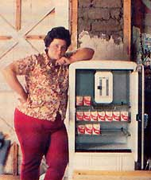

In MOTHER NO. 63, John E. Phillips described his techniques for collecting supplies of fish bait. Now Mary M. Nash points out just how rewarding worm gathering can be!
My husband and I didn't begin our bait and tackle business by choice . . . but rather out of necessity. A fire had destroyed our home, and Ken felt he could rebuild it in one summer if he could work every day . . . but-in the meantime-we would also have to have some form of income. And so, to fill that pressing need, the "Critter-Sitter Farm Bait and Tackle Shop" was born.
During our first summer in business, we sold only night crawlers, worms which grow six to eight inches long and-in our area of Minnesota-are a favored bait for walleyed pike. The crawlers come out of the ground at night to breed, and can be found by flashlight and plucked up by hand . . . if the plucker is fast enough.
We put our catch into plastic ice cream buckets and later deposited the worms in an old bathtub with plenty of wet peat moss, where we allowed them to cool for the remainder of the night. Early the following morning I'd go out to the barn and pack the squirmers-three dozen (minimum) to a box-and refrigerate them.
Because we had no money to spend on commercial worm boxes (which can cost as much as 5 cents apiece), we'd simply recycle half-pint milk containers. Every time we needed to replenish our supply, Ken and I would make after-lunch trips to the local grade school to pick up such "empties" . . . which we dumped into bins in the barn to dry. Surprisingly, there was little offensive odor from the waxed cartons, and they were the perfect size to hold three dozen worms and a handful of bedding.
We began to advertise our business with a homemade 2' X 4' sign-placed at the end of our driveway-which simply stated: "Night crawlers, 350 per dozen, 3 dozen/$1.00" . . . and sold the bait from an extra refrigerator on our porch. Our start-up expenses consisted of what we had to spend for gasoline to drive into town, refrigeration, flashlight batteries and bulbs, and an occasional ice cream cone to keep the children happy.
From the very beginning we decided that the best way to do business would be to give our customers fine products-in good condition-at fair prices. Therefore, in each "three dozen" box, we'd actually place at least 40 hand-counted wrigglers. And we were careful to throw away any that looked sick or dead.
As a result of such consideration, we sold every worm we could lay our hands on . . . sometimes as many as 200 to 300 dozen per day. Soon resorts in the area were calling and ordering 40 to 100 dozen at a crack, even though we gave our "bulk" buyers no discount other than the "three dozen for $1.00" price offered to all our customers.
In the course of our initial summer, we made over $600 per month ... and A fridge full of packaged moneymakers. brought in enough cash to enable us to finish our new home!
We decided to continue the business for a second year . . . primarily to give our teenaged children summer jobs. We added red worms to our line (they're smaller than night crawlers, and sold at a rate of 40 for 50 cents) , which were dug from our own garden and compost piles. And-though we kept our night crawler price the same-our average monthly sales climbed to over $800.
The first tackle item we offered was a specially made worm box which a customer had shown us. We liked the design so much that we ordered a case of the containers. The product proved to be very popular, so we continued to stock it and began to add other equipment that we felt would appeal to our clients.
By the end of the second season, we had so much tackle on hand that Ken decided to construct a one-room, woodframe, 12' X 12' shop . . . with a western-design storefront and boardwalk. At the same time, we opened up some additional parking space and added a circular drive to enable customers with trailers and motor homes to pull in from one direction and go out another . . . without having to back up.
Minnesota state laws specify that no home business may advertise with a sign bigger than 2' X 4'. To make the most of this restriction-and increase our visibility-we put a new sign on the store that was eight inches high and 12 feet long, giving us the same area in square feet as that permitted by the regulations but a more appealing (and "wormy") design.
Minnesota also taxes all nonfood items sold within the state, but-during the first two seasons-we simply paid the taxes ourselves. By the third year of operation, however, we raised our night crawler price to 50 cents per dozen, and began to charge sales tax.
That same spring, we added minnows to our bait line . . . buying them for 40 cents a dozen from a local boy who trapped the little fish in his family's farm lake. The mortality rate among the minnows was so high, however, that-even though we marked them up to 90 cents-we rarely broke even. We continued to sell them, though, as a convenience to the customers.
In order to keep up with our buyers' needs, we soon began to supply leeches and grubs as well . . . and also began to carry such snack items as soda pop, potato chips, and apothecary jars filled with penny candy and gum.
The demand for night crawlers continued to increase (and our children grew up and left home), so it wasn't long before my husband and I found it hard to collect enough bait to supply the shop. We hired local students to help us (paying them a penny per worm), but most of the young men and women quit after one night of creeping around on the ground in pursuit of the crawlers.
Ken even had his relatives in Iowa call us whenever they had a particularly good rainy spell . . . at which point we would close the store for the day and drive over to harvest 1,000-2,000 dozen worms, put them in tubs and foam coolers, and haul the bait bonanza back to Minnesota to sell. (During the hot, dry dog days of August, we were able to convince a local cemetery's board to allow us to water their lawns daily . . . so the night crawlers would continue to come out instead of going deep down into the soil, as they usually do during droughts.)
By the end of the fifth season (even though it was our best yet, with sales of over $5,000 in three months), it was obvious that Ken and I couldn't continue to collect worms nearly all night and sell them all day. We either had to find additional help or begin buying our stock from regular bait wholesalers . . . and probably price ourselves right out of the business.
After looking at the situation from all angles, we decided that the worm venture had served our needs well, and that it was time for us to retire. That winter, we sold the farm and the bait business and moved to Colorado, where we could be closer to our daughters and their new families.
Just the other day, however, a man came into the restaurant that my youngest girl manages and said, "I know you! You used to run the Critter-Sitter Farm up in Minnesota! "
It sure was nice to be remembered.
EDITOR'S NOTE: MOTHER NO. 63-which contained the article "Fiddling for Fish Bait" is available for $3.00 plus $1.00 shipping and handling from THE Mother Earth News P.O. Box 70, Hendersonville, North Carolina 28791.
|
 |
|
|